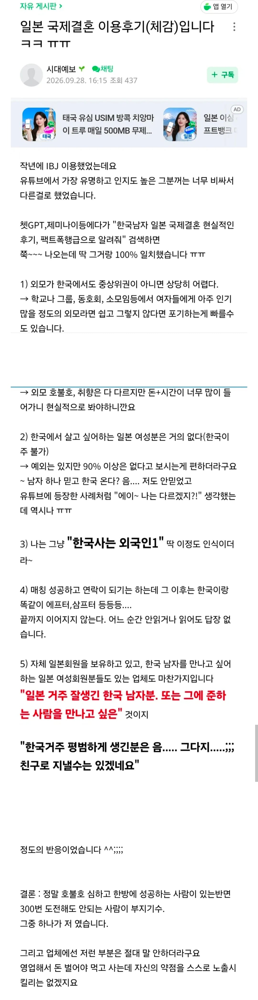

당연한걸 돈주고 배움

당연한걸 돈주고 배움
가끔 말 실수하면 내가 네이티브가 아니라서 잘 몰랐다 하면서 회피기동이 가능함!
그렇지 일본여자도 똑같은 여자라고
아하 당신은 한국사는 한국말하는 중국인이었어요
하이펜팔에 문화와 음식 언어를 배우고 싶다. 정성스럽게 적고 사진 없는 프로필에다가 내 사진 없이 10군데 싹 돌리니깐 1,2개 연락 옴.
이리저리하다가 결혼하고 애 낳고 잘삼
근데 일본은 저런 업체 끼고 하는 거 좀 뭔가 아까움
교류하기가 진짜 너무 쉽고 만날 접점이 너무나도 많기 때문에
외모가 중상위권이 아니라 그냥 중위권에 깔끔하기만해도 만나기 어렵지않음
교류가 쉬운 것 접점이 많은 것은 나만의 장점이 아니기 때문에 장점이 아님
누구나 접할 수 있는 특징과 환경이라 오히려 마이너스임
개인적으로는 오히려 서양권 친구들이 대화 하기 존나 쉽고 편했음
서양권은 결혼까지 가기가 좆빠짐ㅇㅇ
왜?
존나 병신같으면서도 불쌍하기도 하고ㅋㅋ
살좀빼고 깔끔하게 관리만해도 비슷한 여자 만날수있는데
제발 돈 잘 벌고 외모 잘 가꿔서 일녀한테 사랑받으시길!
ㅋㅋㅋㅋ 아니 시발 일본이 무슨 동남아도 아니고 당연한거 아냐?? 단단히 착각하고 있는 사람들이 많나보네
미국 레딧가도 일본가면 본인들이 먹힐거라고 뇌내망상 굴리는거 봐서는 월드와이드로 방구석 찐따새끼들한테는 저게 유일한 희망인듯. 근데 내수에서 팔린적도 없으면서 수출해서 팔린다는 생각은 어떻게 가능한건지 늘 신기할 따름임. 이런거 쓰면 또 악독한 아줌마 만들던데 ㅋㅋㅋㅋㅋㅋㅋㅋ
너도 못생긴 여자 소개 시켜주면 싫어할 거자나...
그렇게 결혼하고싶으면 3만동에 사와라
ㅋㅋ오레오레! 캉코쿠진! 캉코쿠진! 잇쇼니 오사케 노무??
결정사는 고액 무한 가챠라고 보면 됨. 일일 무료 가챠에서 일반 레어가 뜨면 오? 하면서 기분 좋지만, 10만원 넣고 원하는거 뜰 때까지 돌릴 수 있는 가챠권을 샀으면 SSR을 노리지 R 떴다고 멈추는 병신이 어디있겠음.
회사건 동아리건 연애가 목적이 아닌 상태에서 자연스럽게 가까워지면 좋아하고 사랑할 사람도, 결정사에서 만나면 성에 안찰수밖에 없음.
똥믈리에
일본애들이 좋아해줄 정도면 한국에서도 인기 많다
그리고 한녀 특이니 뭐니 하는 것도 그 여자들이 진심으로 사랑하지 않으니까 그런 일이 생기는 거고.
결국 본인 분수보다 더 높은 여자를 만나고 싶어서 생기는 일이라고 생각함
한국에서 인기 없어서 일본 여자 찾는 거일텐데 오히려 외국인이란 핸디캡을 끼고 만난다? 이게 자기객관화가 안되는 거라고 생각함
일본도 한국물 많이 들어서 옛날처럼 고분고분할거라 생각하면 오산임 ㅋㅋ
인생의 진리지.
100%가 안되는건 일부 예외값이 존재하기 때문일뿐 그 예외가 내가 될지 아닐진 모르는거
근데 상식적으로 자본주의 혹은 시장경제에 맞춰 이야기를 하면
저 일본 국제결혼업체에서 보면, 상품 = 일본여성, 고객 = 한국남자 라고 단순하게 정리를 하자면.
하나의 상품이 여러 고객에게 컨택만으로 재화를 벌 수 있다?? 하면(컨택 만으로 비용 혹은 주선권이 없어지는 걸로 알고있움) 이런저런식으로 뺑이만 겁나 돌리는 악덕업체도 있을 것 같은데
저 일본여성들도 본인들이 원해서 돈을 내고 저런 업체를 이용하는 건가??
다~ 자기하기 나름인거고 처음 만났을때 한국인 이라는 인상 만으로 가산점 먹고가긴 하더라고 일본이 근데 거기서 추가로 더 나아가고 뭐어쩌고 하는거는 본인 노력이지뭐
한국인하고도 말 안 통해서 싸우는데 외국인하고 싸워봐라 지옥을 맛볼 거다 ㅋㅋㅋㅋ 한국에 정착한 외국인 아니면 결혼은 무리임